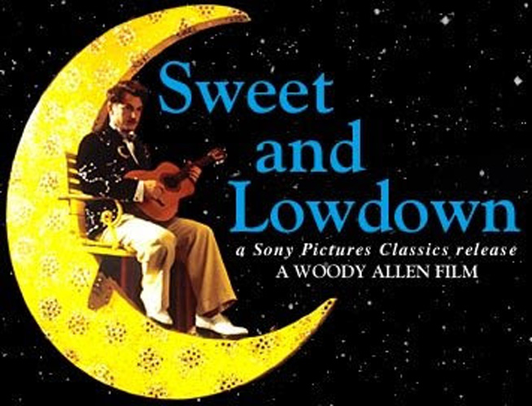
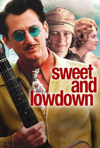
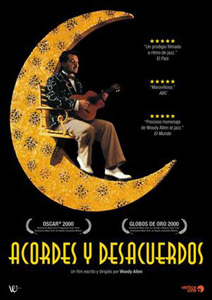

Emmet Ray (Sean Penn) is a jazz guitarist who achieved some acclaim in the 1930s with a handful of recordings for RCA Victor, but who faded from public view under mysterious circumstances. Though a talented musician, Ray's personal life is a shambles. He is a spendthrift, womaniser and pimp who believes that falling in love will ruin his musical career. Due to his heavy drinking, he's often late or even absent for performances with his quintet. After music, his favorite hobby is shooting rats at garbage dumps. Ray idolizes famed guitarist Django Reinhardt, and is said to have fainted in his presence and to have fled a nightclub performance with severe stage fright upon hearing a false rumour that Reinhardt was in the audience.
On a double date with his drummer, Ray meets Hattie, a shy, mute laundress. After overcoming some initial frustration due to the difficulties of communication, Ray and Hattie form an affectionate and close relationship. She accompanies him on a cross-country trip to Hollywood, where he plays in a short film; Hattie is spotted by a director and enjoys a brief screen career. However Ray is convinced that a musician of his stature should never settle down with one woman. On a whim, Ray marries socialite Blanche Williams (Uma Thurman). However, Blanche sees Ray mainly as a colourful example of lower-class life and a source of inspiration for her literary writings. She reports that Ray is tormented by nightmares and shouts out Hattie's name in his sleep.
When Blanche cheats with mobster Al Torrio (Anthony LaPaglia), Ray leaves her and locates Hattie. He assumes that she will take him back, but discovers that she is happily married and raising a family. Afterwards, on a date with a new woman, a despondent Ray plays a melody that Hattie adored and then smashes his guitar and forlornly repeats the phrase "I made a mistake!" as his date leaves him. Woody Allen and the rest of the documentary experts remarked that Ray's final compositions were legendary, finally reaching the quality of Reinhardt's.
Fresh from his 1969 directing debut Take The Money and Run, Allen signed a contract to direct a series of films with United Artists. Told to "write what you want to write", Allen (a clarinetist and avid jazz enthusiast) wrote The Jazz Baby, a dramatic screenplay about a jazz musician set in the 1930s. Allen said later that the United Artists executives were "stunned ... because they had expected a comedy. [They] were very worried and told me, 'We realize that we signed a contract with you and you can do anything you want. But we want to tell you that we really don't like this.'"
Allen went along with United Artists, writing and directing Bananas instead. In 1995, he dismissed The Jazz Baby as having been "probably too ambitious."
In 1998, Allen returned to the project, rewriting the script and dubbing it Sweet and Lowdown. In the role of Emmet Ray, a jazz guitarist whom Allen had originally planned to play himself, the director cast Sean Penn; Allen also considered Johnny Depp, but the actor was busy at the time. In regard to working with Sean Penn, who had a reputation for being difficult to work with, Allen later said, "I had no problem with him whatsoever... He gave it his all and took direction and made contributions himself... a tremendous actor."
In an October 26, 2009, appearance on Howard Stern's radio program, Rosie O'Donnell claimed that Allen offered her the role of Hattie, despite the fact that she had been vocal in her disgust over Allen's relationship with Soon-Yi Previn. When Stern asked if she were at all tempted to take the role despite her personal feelings, she replied that she was "not for one minute tempted". The role went to Samantha Morton.
Sweet and Lowdown was nominated for Academy Awards for Best Actor in a Leading Role (Penn) and Best Actress in a Supporting Role (Morton). Morton's nomination was especially notable given that she does not utter a single word of dialogue in the film. Allen has said that he told Morton to "play the part like Harpo Marx. And she said, 'Who is Harpo Marx?' and I realized how young she was. Then I told her about him [and] she went back and saw the films."
The film was the first of Allen's that was edited by Alisa Lepselter, who has edited all of Allen's films since. Lepselter succeeded Susan E. Morse, who edited Allen's films for the previous twenty years. It was the first of three films where Allen collaborated with Chinese cinematographer Zhao Fei. Allen had first noticed Zhao with his award-winning work on Raise the Red Lantern, some years earlier.
Sweet and Lowdown was filmed entirely in New York and New Jersey, but set in the Chicago area and California.
Blanche: "What do you think of when you play? What goes through your mind?"
Emmet Ray: "Yeah, that I'm underpaid. I think about that sometimes."
"Emmet Ray is a fictional character, but so convincing in Woody Allen's Sweet and Lowdown that he seems like a real chapter of jazz history we somehow overlooked." - Roger Ebert : At the Movies
"A likable, lively little ditty - one theme, some clever variations - that never wears out its welcome." - David Ansen : Newsweek

